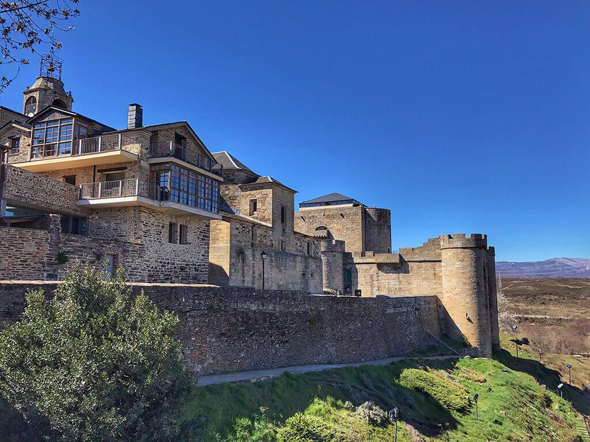

PUEBLA DE SANABRIA

Localización
Geografía
Historia
Naturaleza
Cultura
Tradiciones
Localización
Puebla de Sanabria (en asturleonés, Puebla de Senabria) es un municipio y localidad española de la provincia de Zamora en la comunidad autónoma de Castilla y León.
La localidad de Puebla, se encuentra situada a 113 km de Zamora, la capital provincial. Su casco urbano se encuentra en un territorio al que la naturaleza ha dotado de especiales características defensivas, modeladas a lo largo de los siglos por el arroyo Ferrera y los ríos Tera y Castro, que le han dado su especial fisonomía de espigón. Además, su ubicación estratégica junto a la frontera con Portugal, hizo de esta plaza que desde antiguo fuera una villa aforada, fortificada y amurallada, lo que le dio un notable protagonismo en la formación histórica del territorio que le rodea. Fue sede de un notable poder militar, eclesiástico y político que a lo largo de los siglos generó un rico patrimonio arquitectónico y monumental que en 1994 llevó a que la villa fuera declarada bien de interés cultural en la categoría de conjunto histórico.
El municipio de Puebla está situado en el noroeste de la provincia de Zamora, en la comarca natural de Sanabria. El término municipal incluye las localidades de Puebla, Castellanos, Robledo y Ungilde. El municipio, que tiene una superficie de 81,39 km², cuenta según el padrón municipal para 2018 del INE con 1409 habitantes y una densidad de 17,59 hab./km². Destaca el notable nivel de conservación de su patrimonio paisajístico y medioambiental, de características similares a las del cercano espacio natural protegido del parque natural del Lago de Sanabria.
Geografía
Geología
Rica en hermosos paisajes y en una cultura tradicional que pervive. Persisten a su vez, valores geográficos de gran interés, huellas que han dejado los glaciares, como el Lago de Sanabria y las numerosas lagunas de la sierra, así como una flora y fauna muy especial y excepcionalmente variada. Junto a esta belleza y variedad natural, encontramos también una profunda cultura popular, claramente diferenciada del resto de las zonas limítrofes, crecida al amparo de este enclave natural único, y respaldada por una amplia historia de la cual podemos encontrar también, abundantes muestras a lo largo y ancho de la comarca.
Clima
Puebla de Sanabria y el valle de Sanabria, o si se quiere la comarca de Sanabria, se encuentran situadas en un territorio fronterizo con influencias tanto mediterráneas como atlánticas. En este sentido, dos de las sierras que rodean el valle, concretamente las sierras Segundera -por el oeste- y Cabrera -por el norte-, marcan el límite entre el clima atlántico y mediterráneo, convirtiendo a Sanabria en un territorio de transición climática. De esta forma, tienen especial importancia las diferentes orientaciones de las cimas, laderas y valles de este territorio, al ser este el factor determinante de que predomine uno u otro de los dos ambientes. El predominio atlántico estará presente en las laderas con orientación norte y oeste, mientras que las de exposición sur y este serán de predominio mediterráneo. A todo lo anterior hay que unir las condiciones extremas de las altas cumbres, donde han sobrevivido y evolucionado especies desde hace más de 10 000 años.
En el caso de Puebla de Sanabria, su casco urbano se encuentra situado a unos 941 msnm y cuenta con una orientación este. Ambos condicionantes propician que esta localidad cuente con unas características climáticas predominantes del mediterráneo templado-húmedo, al contar con cierta influencia atlántica. Así pues, su temperatura media anual ronda los 8ºC y la precipitación media se aproxima a los 1400 mm/año.
Historia
Sanabria aparece documentada en una de las actas del concilio de Lugo del 509, aunque como indican no pocos autores, podría ser una referencia a la totalidad de la comarca sanabresa y no a la actual localidad de Puebla. Sanabria vuelve a ser documentada en el s. VII, esta vez como parroquia sueva y ceca visigoda bajo el nombre de "Senapria".
Es en el s. X cuando se confirma la existencia de una "Urbs Senabrie" como referente territorial, según indican los primeros diplomas del monasterio de San Martín de Castañeda, época en la que la localidad quedó integrado en el Reino de León.17 Los historiadores han especulado sobre la posible existencia en esta época de algún tipo de fortificación en la puebla, impulsada por los reyes leoneses en su avance hacia el sur, dato que no ha podido ser respaldado por la documentación existente ni por los vestigios arqueológicos hallados.
La consolidación de este núcleo urbano como cabeza de toda la comarca sanabresa debió producirse a partir del reinado de Alfonso VII de León (1126 a 1157). En 1132 la villa ya contaba con un castillo, conforme se documenta a través de sus tenentes: conde Ponce Fernandizi (1132) y posteriormente su hermano Xemeno Fernandizi, Roderico Petri señor de "Senabria et de Carvaleda" (1150), del 1158 al 1161 Ponce de Cabrera y Rodrigo Pérez de Sanabria, Fernando Ponce (1164), en 1171 "mandante Senabrie comité Poncius et comitissa María Fernándiz" y Fernandus Aldefonsus (1188).
Alfonso IX de León organizó en el 1195 las funciones políticas, económicas, jurídicas y militares de Puebla de Sanabria, convirtiéndola en uno de los bastiones leoneses de la frontera con Portugal. Además, el 1 de septiembre de 1220 convirtió esta villa en una de sus pueblas, concediéndole una carta puebla, inspirada en el Fuero de Benavente, reedificando y mejorando además su castillo y sus defensas muradas. Es por tanto de esta época la innovadora planta del castillo de Puebla de Sanabria, con su forma cuadrangular, pero rematada en sus ángulos por cubos circulares, algo prácticamente inusual hasta la Baja Edad Media. El impulso dado a la villa por este monarca hizo que Puebla de Sanabria fuera adquiriendo a lo largo del s. XII una notable relevancia económica, política y militar, que será mantenida con posterioridad, como muestra la confirmación y modificación parcial de su carta foral por el rey Alfonso X "el Sabio"(Sevilla, 19 de mayo de 1273).
Durante el s. XIV, la villa fue propiedad de Juan Alfonso de Alburquerque, del conde Fernando de Castro o de Alvar Vázquez de Losada, entre otras personalidades de la época. Alvar Vázquez, de la familia noble local de los Losada, recibió esta villa, su alfoz y la Carballeda en una donación efectuada por Juan I y que recibió en régimen de mayorazgo. En 1451 la mitad de la villa y toda su tierra es vendida por doña Mayor de Porras a Alonso de Pimentel, tercer conde de Benavente. Este hecho conllevó, además, que el citado conde tomara posesión de su castillo. A mediados del s. XV, tras extinguirse las dos líneas principales de la familia Losada (sólo subsistió la rama de los señores de Rionegro), los Pimentel adquirieron por donación regia la otra mitad de Puebla. Años después, los Reyes Católicos devolvieron a los Losada su mitad de la villa, motivo por el que Rodrigo Alonso de Pimentel tuvo que permutar esa propiedad a doña Leonor de Melgar, viuda de don Diego de Losada, por la hacienda que tenía en Montamarta (1489). Desde este momento, la vida política y social de la villa y su alfoz fueron dirigidas por los Condes de Benavente, que pusieron y quitaron de su cargo a diferentes alcaldes, como pudieron ser Pedro de Montemolín (1474) o Pedro de Sosa (entre 1490 y 1492).
Durante el siglo XVII sufrió la guerra de Restauración portuguesa al estar enclavada en pleno frente de batalla, siendo José Martínez de Salazar el gobernador de la villa durante dicho conflicto bélico. De igual manera, durante la Guerra de Sucesión ocurrida en España entre los partidarios de Felipe de Anjou y el Archiduque Carlos, la villa fue ocupada por tropas portuguesas, siendo recuperada por la Monarquía Hispánica el 24 de diciembre de 1715, según lo acordado en la Paz de Utrecht.
Durante toda la Edad Moderna, Puebla de Sanabria fue la cabeza y capital de una receptoría, la de Sanabria, que se integraba en la provincia de las Tierras del Conde de Benavente. En todo caso, al reestructurarse las provincias y crearse las actuales en 1833, Puebla pasó a formar parte de la provincia de Zamora, dentro de la Región Leonesa, pasando a encabezar en 1834 el partido judicial de Puebla de Sanabria.
En cuanto a la configuración del municipio, cabe señalar que la localidad de Ungilde se integró en el municipio de Puebla en 1967, haciendo lo propio Castellanos en 1973.
Naturaleza
El parque natural Lago de Sanabria y sierras Segundera y de Porto
El origen de este espacio natural se sitúa en las fases más frías del Cuaternario, cuando en Sanabria se establecieron las condiciones glaciares que afectaron notablemente al modelado de sus montañas. Durante este período, el límite de las nieves perpetuas se estableció en torno a los 1600 m de altitud, lo que permitió que durante la glaciación del Würm en la altiplanicie de la sierra, se establecieran grandes acumulaciones de hielo y nieve, originando un glaciar de meseta o casquete. De él divergían largas y potentes lenguas de hielo encajadas en los anteriores valles fluviales. Hace 10 000 años la glaciación terminó y la lengua glaciar se retiró dejando al descubierto amplios y profundos valles, circos glaciares, rocas aborregadas, estrías glaciares, morrenas, el lago y más de 20 lagunas diseminadas por la sierra.
Cultura
Cuenta con el Museo de Gigantes y Cabezudos, situado en la calle de San Bernardo, en pleno conjunto histórico. El él se exhiben los diez gigantes y los treinta y tres cabezudos que suelen desfilar en las distintas fiestas y eventos de la villa. Los desfiles de gigantes se vinculan con la creación en 1848 de la archicofradía de Nuestra Señora de las Victorias, ya que desde ese año desfilan en las fiestas de los días siete y ocho de septiembre. En los años 50 del siglo XX, tras la prohibición de los desfiles de gigantes y cabezudos, el ayuntamiento comenzó a adquirir los distintos personajes que desfilaban y otros nuevos que ahora se exhiben en este museo.
Tradiciones
El primer fin de semana de febrero se celebran las fiestas en honor a la Virgen de las Candelas, patrona del barrio de San Francisco de Puebla de Sanabria, son unas fiestas con un gran ambiente festivo durante el fin de semana y cuyas peculiaridades son la quema de una gran hoguera el sábado, y que las verbenas hasta el amanecer tienen lugar dentro de un gigantesco local.
En Puebla de Sanabria y alrededores podemos distinguir una serie de bailes y danzas característicos, interpretados por los gaiteros y panderetas, a menudo acompañados de cantos. Los gigantes interpretan sus prominentes danzas al son de la música regional.
Enlaces a algunas páginas de interes:
